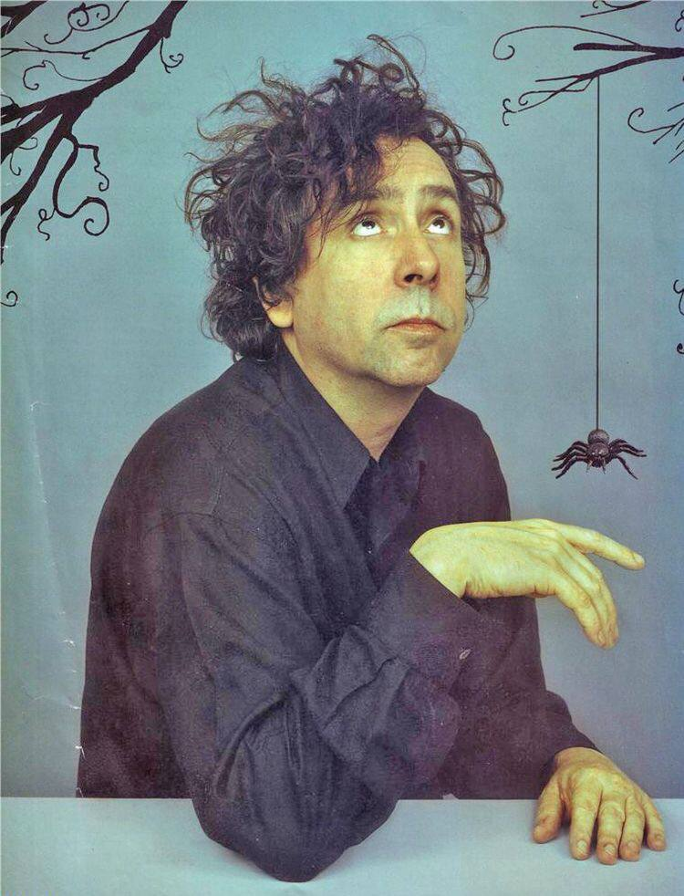
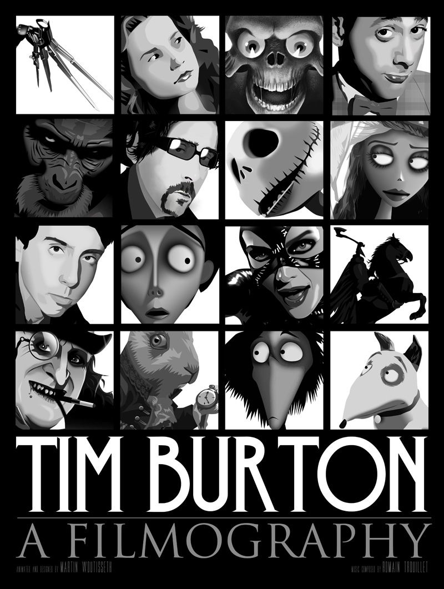

Despre Tim Burton
 Timothy Walter "Tim" Burton (n. 25 august 1958, Burbank, California) este un regizor, scenarist și producător de filme american. Maestru al fantasticului, influențat de opera lui Edgar Allan Poe, povestitor și desenator de talent.
La Tim Burton e în fiecare zi Halloween: universul lui are un simț al locului "gotic". Influențele lui sunt binecunoscute: filmele fantasy, expresionismul german, horror-urile marca Hammer Film Productions, Vincent Price etc. Burton simte afecțiune pentru lumea monștrilor: "monștrii sunt domeniul meu. Întotdeauna mi-au plăcut, ca și copil. M-am simțit aproape de ei: la marginea societății și neînțeles, ca și ei. Pe lângă asta, am avut întotdeauna o slăbiciune pentru outsideri, pentru cei pe care îi considerăm răi, deși de fapt ei nu sunt răi deloc. Sunt personaje demne de îndrăgit și interesant de explorat". În aproape toate filmele sale, Tim Burton explorează personaje excentrice, solitare. Le înzestrează cu poezie, inspirată din Edgar Allan Poe, Fellini și Edward Gorey.
Regizorul a avut o adolescență grea fiind un tânăr foarte dificil. Retras în camera sa viziona filme de groază, a dezvoltat o pasiune îndeosebi pentru actorul Vincent Price, căruia i-a dedicat în cele din urmă filmul de animație, "Vincent" (1982). Fire creativă, copilul Burton era, de asemenea, pasionat de desen. Filmul “Edward Maini-de –foarfece” este inspirat dintr-un desen realizat de Burton în adolescență, personajul așternut pe hârtie, Edward, fiind însuși regizorul, un om foarte talentat și sensibil, însă neînțeles de cei din jurul său.
Deși fusese considerat de mulți în trecut ca fiind un regizor netalentat, după o lungă perioadă petrecută fără succes la casa de producție "Disney", în anul 1985, la începutul carierei sale, a realizat filmul “Marea aventură a lui Pee-Wee” folosindu-se de un buget total de 7 milioane dolari, încasările au fost însă de peste 40 de milioane de dolari.
